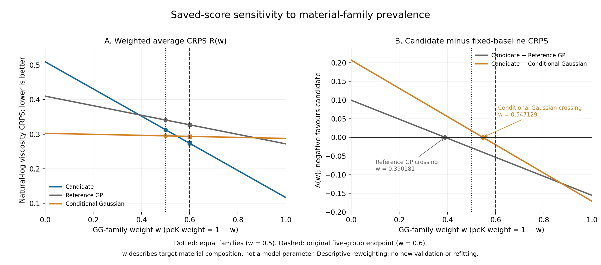

2026-11-02；只对已保存分数做描述性算术，没有新增拟合、预测、目标评分或原始目标读取。原方法、原主终点、全部四来源与旧结果保留。
Liverpool有三个GG组成组和两个peK组成组，各组三条原生曲线。原预定终点是先等权组内曲线/条件、再等权五个组，相当于GG占60%、peK占40%。将两个化学family各赋50%是另一种目标材料构成，并非“更正确”的主终点，更不应取代先前登记的原终点。分析组、曲线与family均不能自动当作独立制备批次。
CRPS、误差和interval score越低越好；覆盖率须与区间宽度和失败案例结合。log-RMSE是加权MSE的平方根，不是平均各组RMSE。—表示点方法没有对应概率对象。
| 权重 | 方法 | log-CRPS | log-RMSE | 边际90%覆盖 | 平均log区间宽度 | 90% interval score |
|---|---|---|---|---|---|---|
| 原五组成组等权，w=0.6 | 冻结曲率联合高斯（当前方法） | 0.273635 | 0.562155 | 71.56% | 0.730671 | 3.377353 |
| 两family等权，w=0.5 | 冻结曲率联合高斯（当前方法） | 0.312928 | 0.616247 | 64.44% | 0.704629 | 4.012982 |
| 原五组成组等权，w=0.6 | 固定参考 GP | 0.327109 | 0.597078 | 57.27% | 0.780376 | 3.136817 |
| 两family等权，w=0.5 | 固定参考 GP | 0.340916 | 0.610641 | 52.54% | 0.748348 | 3.524380 |
| 原五组成组等权，w=0.6 | 固定条件 Gaussian | 0.293629 | 0.607591 | 88.70% | 1.488886 | 1.640179 |
| 两family等权，w=0.5 | 固定条件 Gaussian | 0.295105 | 0.608899 | 87.99% | 1.530325 | 1.682656 |
| 原五组成组等权，w=0.6 | 六锚点 log-PCHIP | — | 21.708516 | — | — | — |
| 两family等权，w=0.5 | 六锚点 log-PCHIP | — | 24.125625 | — | — | — |
| 原五组成组等权，w=0.6 | 六锚点幂律 OLS | — | 0.636172 | — | — | — |
| 两family等权，w=0.5 | 六锚点幂律 OLS | — | 0.601002 | — | — | — |
| 原五组成组等权，w=0.6 | 末两锚点幂律 | — | 0.804197 | — | — | — |
| 两family等权，w=0.5 | 末两锚点幂律 | — | 0.852246 | — | — | — |
等family时，候选相对GP的CRPS降低约8.21%，相对条件Gaussian的CRPS升高约6.04%；候选log-RMSE0.616247，也高于GP0.610641、条件Gaussian0.608899、六锚点幂律0.601002。不能只报告对候选有利的损失指标。原五组主终点的16.35%/6.81% CRPS收益仍按原定义保存。
记w为目标材料群体中GG family的权重，则R(w)=wRGG+(1−w)RpeK。候选与固定对照的差值也是直线：Δ(w)=ΔpeK+w(ΔGG−ΔpeK)。仅为展示已经确定的保存分数平均，不拟合w，也不按结果选权重。

候选对GP的交点为w=0.390181，对条件Gaussian为w=0.547129；候选只在高于对应交点时CRPS较低。w=0.6是原五组主终点，w=0.5是本次替代构成。交点不是模型参数、不是一个新材料的适用域分类阈值，也不提供人群或批次泛化保证。
当前方法GG family覆盖100%，peK family仅28.89%。因此原五组平均71.56%与等family的64.44%都正确，但都没有证明名义90%区间得到可靠校准。把所有点落入各自边际90%带的频率，也不能解释为具有90%同时覆盖保证的整曲线置信带。
逐次移除一个已保存的组均值、再对其余四组做算术平均时，候选对GP的CRPS五次都较低；但移除GG0.5或GG0.75后，对条件Gaussian的差值分别变成+0.023651和+0.038923，候选反而较差。这是保存分数的影响分析，没有leave-one-out重新训练，也没有形成新的独立验证。
| 来源 | 方法 | 原生曲线/分析组 | 原来源主终点log-CRPS | 边际90%覆盖 |
|---|---|---|---|---|
| Liverpool GG/peK 墨水 | 冻结曲率联合高斯（当前方法） | 15/5 | 0.273635 | 71.56% |
| Liverpool GG/peK 墨水 | 固定参考 GP | 15/5 | 0.327109 | 57.27% |
| Liverpool GG/peK 墨水 | 固定条件 Gaussian | 15/5 | 0.293629 | 88.70% |
| HA/CMHA 溶液 | 冻结曲率联合高斯（当前方法） | 10/8 | 0.148457 | 78.26% |
| HA/CMHA 溶液 | 固定参考 GP | 10/8 | 0.137126 | 83.89% |
| HA/CMHA 溶液 | 固定条件 Gaussian | 10/8 | 0.380441 | 96.88% |
| 颗粒水凝胶 | 冻结曲率联合高斯（当前方法） | 16/5 | 0.297441 | 57.90% |
| 颗粒水凝胶 | 固定参考 GP | 16/5 | 0.204039 | 78.70% |
| 颗粒水凝胶 | 固定条件 Gaussian | 16/5 | 0.215897 | 84.44% |
| 动态交联海藻酸盐 | 冻结曲率联合高斯（当前方法） | 5/5 | 3.302394 | 2.44% |
| 动态交联海藻酸盐 | 固定参考 GP | 5/5 | 3.176013 | 3.90% |
| 动态交联海藻酸盐 | 固定条件 Gaussian | 5/5 | 3.165265 | 3.90% |
HA/CMHA、颗粒水凝胶和动态交联海藻酸盐的候选CRPS均未胜参考GP；动态交联来源仍是严重失败。不同化学、交联状态、测量算子与扫描历史混杂，本分析没有隔离某种物理原因，也没有用材料差异为失利作因果解释。不得将不利来源删除后扩大主张。
独立实现从276行保存score scalars重新平均，使用50位Decimal；不导入root分析函数。与root的307项比较全部通过，最大差约1.31×10⁻¹³；原保存输入SHA保持不变。有限精度分数守卫的一次实现停止及修正理由另行保留，没有改变输入、材料组或规则。
当前合理主张是：原限定材料的受控研究及预定五组外部墨水终点提供竞争性证据，但迁移优势集中于GG，且不同材料构成会改变强基线排序。两个family不能支持显著性、总体置信区间、认证批次泛化或校准保证。不必要求所有材料和指标第一，但必须如实限定贡献范围。原论文与旧分数不被这项敏感性分析覆盖。
两种权重完整对照CSV · 权重敏感性图数值系数 · 权重敏感性图英文图注 · 可纳稿英文增补 · 机器可读报告范围 · 原始保存分数的不可变Git版本。